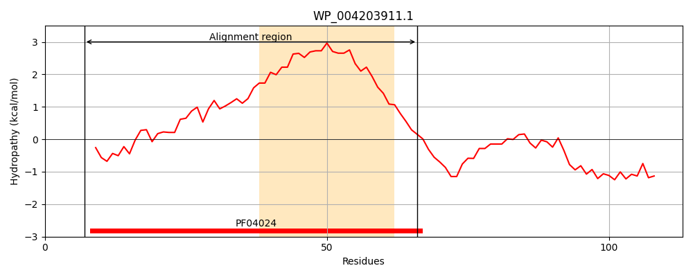
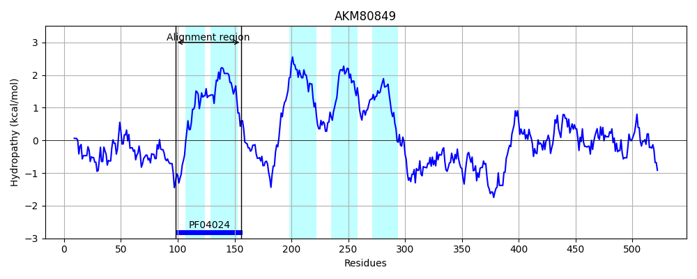
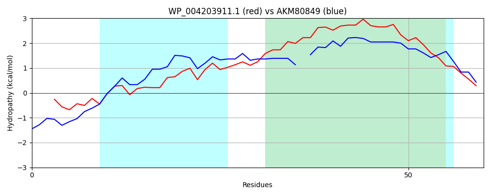

Hit Accession: AKM80849
Hit TCID: 9.B.270.1.2
Hit Description: gnl|BL_ORD_ID|1289 gnl|TC-DB|AKM80849|9.B.270.1.2 membrane protein of unknown function [Candidatus Saccharibacteria bacterium GW2011_GWC2_44_17]
Mach Len: 60
e:0.000081
Query TMS Count : 1
Hit TMS Count: 5
TMS-Overlap Score: 1.250000
Predicted Substrates:None
BLAST Alignment:
| Protein Hydropathy Plots: | |
|---|---|
|  |  |
Pairwise Alignment-Hydropathy Plot: | |
|  | |